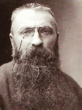

Auguste Rodin (1840-1917), birçok uzman tarafından gerçekçi insan figürlerinin son büyük heykeltıraşı olarak görülür. Düşünen Adam gibi muazzam eserleri ile iyi tanınan Rodin, Michelangelo’nun cüsseli, bitmemiş başyapıtlarının boyutlarına ve akışına öykündü.
Rodin 1854 ile 1857 yılları arasında Paris’te Petite Ecole’de çizim eğitimi aldı. Akademi tarafından reddedilen Rodin, erken dönem meslek hayatı boyunca bir sanatkâr, seramik ressamı ve kuyumcu olarak yaşamını kazanmaya çalıştı. 1864’te Albert-Ernest Carrier-Belleuse stüdyosuna girdi. Aynı yıl doğacılığa olan ilgisini açığa çıkardığı, ama bitirilmemiş olarak görülen ve resmî Salon tarafından reddedilen Kırık Burunlu Adam adlı eserini tamamladı. 1870’te Carrier-Beleuse’ü, sonunda bağımsız bir atölye oluşturana ve kabul gören bir heykeltıraş olmaya çabaladığı Brüksel’e kadar takip etti.

1875’te İtalya’ya yaptığı bir gezi, Rodin’i Michalengelo, Donatello ve klasik antik dönem heykelleriyle yüz yüze getirdi. Cevaben, bazılarının gerçek bir insanın kalıbından yapıldığına inandığı, canlıymış gibi görünen eseri Bronz Çağı’nı (1875) yarattı.
1880’de Rodin, Dekoratif Sanatlar Müzesi’nin bronz kapıları için Fransız hükümetinden bir iş aldı. Lorenzo Ghiberti’nin Floransa’da Vaftizhane’de yer alan ünlü eseri Cennetin Kapıları’ndan esinlenen Rodin, ölümüyle yarım kalan Cehennemin Kapıları için 180’den fazla figürü kalıba döktü.
1884’te Calais yurttaşları Rodin’den 1347’de şehirlerinin İngilizler tarafından işgalini durdurmak için hayatlarını feda eden altı adamın anısına bir anıt yaratmasını istediler. Sonucu Calais Kasaba Sakinleri adlı eseri, adamları kahramandan ziyade kurban gibi tasvir etmesiyle eleştirildi. 1891’de Rodin, Honore de Balzac’ın portresi için bir iş aldığında, yedi yıl adamın gümüş levha üzerine çekilmiş fotoğraflarını toplayarak geçirdi; terzisine danıştı ve yazarın kişiliğini hissedebilmek için evinin çevresindeki arazisini çalıştı. Ancak Calais Kasaba Sakinleri gibi, eserinin geleneklere çok uymadığı farz edildi. Rodin eleştirileri, “İlkem, sadece şekli değil, ama hayatı da taklit etmektir.” diyerek cevapladı. Eleştirmenlerine rağmen, Rodin Fransız hükümetinden önemli işler almaya devam etti.
1895’le beraber Rodin, bir Avrupa şöhreti olarak yaşadığı ve yabancı üniversitelerden fahrî doktoralık unvanı aldığı sırada Brilliants Villası’nı satın aldı. 1908’de Paris’e, sanatçının ölümünden bir sene önce 1916’da gelecekteki Rodin Müzesi olarak tasarlanan bir bina olan Hotel Biron’a hareket etti. 1919’da müzeye dönüştürülen bu bina, dünyadaki Rodin eserlerinin en büyük koleksiyonuna ev sahipliği yapmaya devam etmektedir.
EK BİLGİ:
1. Alman şair Rainer Maria Rilke, 1905’ten 1906’ya kadar Rodin’in sekreteri olarak hizmet etti ve daha sonra onun hakkında bir kitap yazdı.